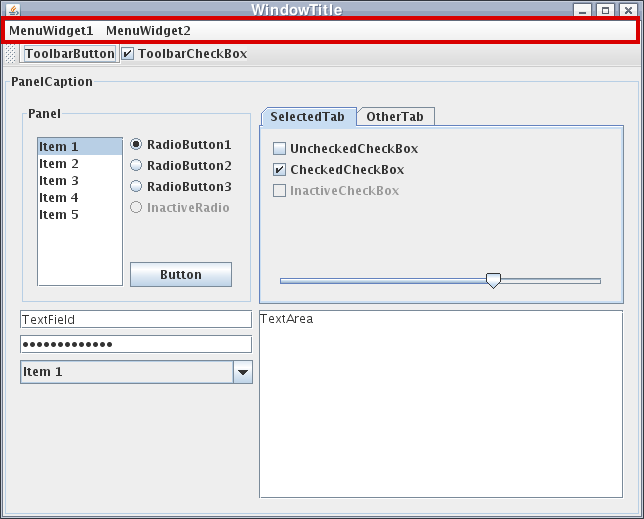
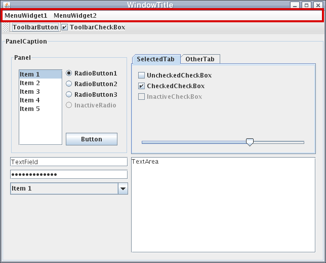

Elementos de interface (Swing)
Computação II - Ciência da Computação
Prof.: Danilo S. Carvalho
Nessa aula, aprenderemos sobre os elementos de interface gráfica que podemos usar a partir do toolkit Swing e como posicioná-los em uma janela.
Ao final da aula, vamos entender o processo de construção de uma GUI através dos componentes e painéis do Swing.
O toolkit Swing define os elementos de interface como componentes, organizados em uma hierarquia de classes.
Com relação a sua função, os componentes podem ser divididos em: janelas (Window), painéis (JPanel), e demais controles (JComponent).
Uma janela ocupa espaço no ambiente de trabalho, e pode ser povoada com controles e painéis.
Painéis ocupam espaço dentro de uma janela, e são usados para organizar outros componentes (painéis, controles), definindo o seu posicionamento.
Os controles são componentes que permitem a interação com o usuário, tal como entrada de texto, iniciar uma ação, selecionar valores ou opções.
Os controles básicos do Swing são:
JLabel: Um espaco para texto informativo (label).
JTextField: Uma caixa de entrada de texto, com uma única linha.
JTextArea: Uma caixa de entrada de texto com múltiplas linhas.
JButton: Um botão que pode ser clicado.
JCheckBox: Uma caixa de marcação, que pode ser ativada ou desativada.
JRadioButton: Um botão para seleção de uma opção em um grupo de opções.
JComboBox: Uma caixa de seleção.
JSlider: Um seletor de valor em um intervalo (ex: intensidade).
JList: Uma lista selecionável de itens.
JScrollBar: Uma barra de rolagem para texto ou outros componentes.
JMenuBar: Menu superior para controlar a aplicação.
 

Toda janela ou painél contém um LayoutManager, que define como os componentes vão ficar posicionados dentro da sua área de exibição.
A escolha do LayoutManager depende de como desejamos montar uma janela e quis os componentes envolvidos.
Quando adicionamos um componente em uma janela ou painél, podemos escolher o espaço que será ocupado no LayoutManager correspondente.
Os tipos de LayoutManager são os seguintes:.
BorderLayout: É o LayoutManager padrão de um JFrame. Separa o espaço em 5 regiões: NORTH (cima), SOUTH (baixo), WEST (esquerda), EAST (direita) e CENTER.
BoxLayout: Coloca os componentes em uma única linha ou coluna.
CardLayout: Permite trocar os componentes que são mostrados em um determinado espaço.
FlowLayout: É o LayoutManager padrão de um JPanel. Coloca os elementos centralizados em uma linha e vai adicionando linhas quando o espaço horizontal é esgotado.
GridLayout: Posiciona os componentes em uma grade com células de tamanho fixo, preenchendo-as com os componentes.
GridBagLayout: Permite posicionar os componentes em uma grade com linhas, colunas e células de tamanho flexível.
GroupLayout: Permite posicionar os componentes de forma hierárquica, organizada pelas dimensões horizontal e vertical, com diferentes opções de agrupamento e espaçamento dos componentes.
SpringLayout: Implementa espaçamento flexível entre os componentes, permitindo posicionamento mais elaborado, especialmente entre campos de entrada e labels.


Vamos criar uma janela de mensagem simples usando o BorderLayout.
Criamos uma classe com atributo privados para representar a janela e os controles do programa.
Uma JLabel para informar o uso da caixa de mensagem ao usuário, uma JTextArea para conter a mensagem, e um JButton para disparar o envio da mensagem.
No método initWindow, instanciamos a janela e os controles, e atribuimos as suas propriedades desejadas.
Em seguida adicionamos os controles na janela, escolhendo um espaço no BorderLayout.
Por fim, tornamos a janela visível.
Aí está o resultado.
import java.awt.*;
import javax.swing.*;
public class ExemploSwingMensagem {
private JFrame janela;
private JLabel lblMensagem;
private JTextArea txtMensagem;
private JButton btnEnviar;
private void initWindow() {
janela = new JFrame("Enviar mensagem");
janela.setSize(400, 300);
janela.setDefaultCloseOperation(JFrame.EXIT_ON_CLOSE);
lblMensagem = new JLabel("Mensagem");
txtMensagem = new JTextArea();
btnEnviar = new JButton("Enviar");
janela.add(BorderLayout.NORTH, lblMensagem);
janela.add(BorderLayout.CENTER, txtMensagem);
janela.add(BorderLayout.SOUTH, btnEnviar);
janela.setVisible(true);
}
public static void main(String[] args) {
new ExemploSwingMensagem().initWindow();
}
}
Entretanto, observamos que o label está descentralizado, e o texto está passando o limite horizontal se for muito longo.
Para resolver o problema com o label, criamos um JPanel e colocamos o label dentro dele.
O LayoutManager do Jpanel (FlowLayout) centraliza automaticamente os elementos.
Problema resolvido.
import java.awt.*;
import javax.swing.*;
public class ExemploSwingMensagem {
private JFrame janela;
private JLabel lblMensagem;
private JTextArea txtMensagem;
private JButton btnEnviar;
private void initWindow() {
janela = new JFrame("Enviar mensagem");
janela.setSize(400, 300);
janela.setDefaultCloseOperation(JFrame.EXIT_ON_CLOSE);
lblMensagem = new JLabel("Mensagem");
txtMensagem = new JTextArea();
btnEnviar = new JButton("Enviar");
JPanel painelLabel = new JPanel();
painelLabel.add(lblMensagem);
janela.add(BorderLayout.NORTH, painelLabel);
janela.add(BorderLayout.CENTER, txtMensagem);
janela.add(BorderLayout.SOUTH, btnEnviar);
janela.setVisible(true);
}
public static void main(String[] args) {
new ExemploSwingMensagem().initWindow();
}
}
Para resolver o problema da rolagem de texto da caixa de mensagem, primeiro precisamos mudar a propriedade lineWrap da JTextArea usan o setLineWrap().
Essa propriedade indica se a JTextArea vai exibir o texto na próxima linha ou não, caso ele exceda o tamanho horizontal da caixa de texto.
Além disso, precisamos adicionar a JTextArea em um JScrollPane, para colocar automaticamente uma barra de rolagem quando o texto exceder o tamanho vertical da caixa de texto.
Agora a interface da janela de mensagem está apresentável.
import java.awt.*;
import javax.swing.*;
public class ExemploSwingMensagem {
private JFrame janela;
private JLabel lblMensagem;
private JTextArea txtMensagem;
private JButton btnEnviar;
private void initWindow() {
janela = new JFrame("Enviar mensagem");
janela.setSize(400, 300);
janela.setDefaultCloseOperation(JFrame.EXIT_ON_CLOSE);
lblMensagem = new JLabel("Mensagem");
txtMensagem = new JTextArea();
btnEnviar = new JButton("Enviar");
JPanel painelLabel = new JPanel();
painelLabel.add(lblMensagem);
txtMensagem.setLineWrap(true);
JScrollPane txtScroll = new JScrollPane(txtMensagem);
janela.add(BorderLayout.NORTH, painelLabel);
janela.add(BorderLayout.CENTER, txtScroll);
janela.add(BorderLayout.SOUTH, btnEnviar);
janela.setVisible(true);
}
public static void main(String[] args) {
new ExemploSwingMensagem().initWindow();
}
}
Agora sabemos como criar e posicionar os elementos de uma interface gráfica usando o toolkit Swing.
Na próxima aula aprenderemos a definir ações para os diferentes elementos da GUI.
Exercício:
- Crie uma interface de calculadora digital, com um mostrador (display), botões para todos os dígitos, para as 4 operações básicas, e para calcular e limpar o resultado.
Até a próxima aula!